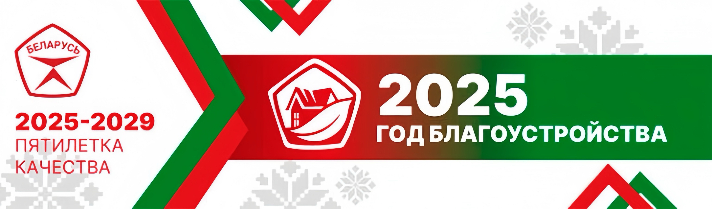
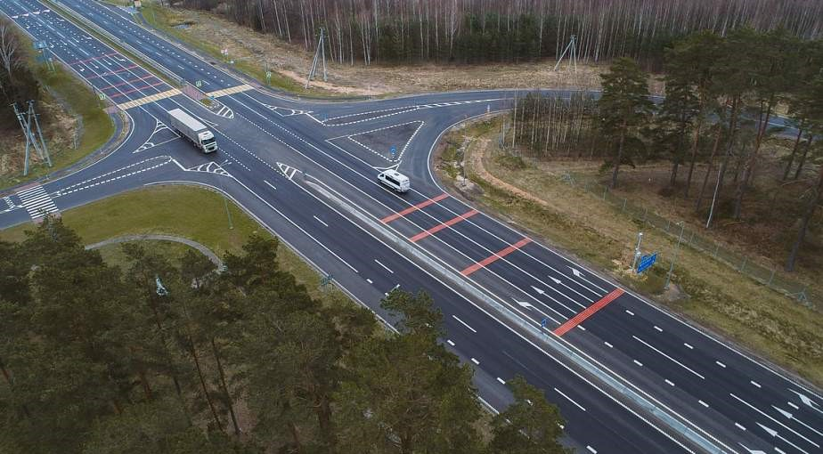
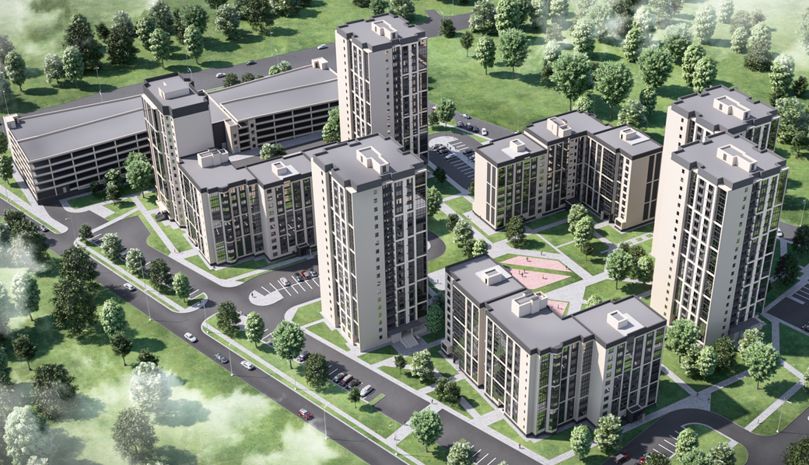
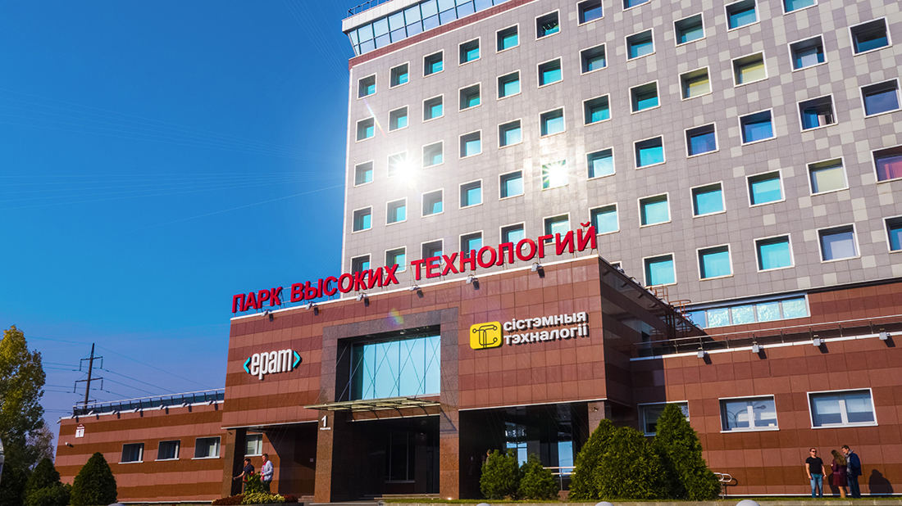
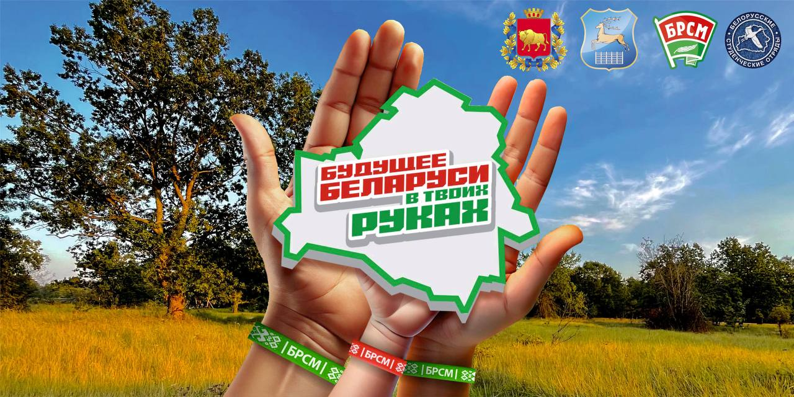

Пяцігодка якасці і добраўпарадкавання
Што такое пяцігодка якасці?
Пяцігодка якасці – гэта комплексная праграма развіцця і мадэрнізацыі розных галін эканомікі, інфраструктуры і сацыяльнай сферы Беларусі. Яна накіравана на павышэнне ўзроўню жыцця грамадзян, удасканаленне прамысловых тэхналогій і развіццё гарадоў і вёсак краіны.
Будаўніцтва і мадэрнізацыя
За апошнія гады ў Беларусі актыўна рэканструююцца дарогі, узводзяцца новыя жылыя кварталы, мадэрнізуюцца прадпрыемствы. Асаблівая ўвага надаецца энергаэфектыўнасці і экалагічнасці будаўніцтва.
Гады добраўпарадкавання
Гады добраўпарадкавання сталі неад’емнай часткай дзяржаўнай праграмы. Ва ўсіх абласцях і раёнах Беларусі праводзяцца работы па будаўніцтву і аднаўленню двароў, паркаў, дзіцячых пляцовак, а таксама добраўпарадкоўваюцца гістарычныя цэнтры гарадоў.
Тэхналагічны прарыў
Актыўнае развіццё ІТ-сектара і лічбавізацыі эканомікі дазваляе Беларусі выходзіць на новы ўзровень. Практычна ўсе дзяржаўныя паслугі ўжо даступныя ў анлайн-фармаце, а IT-парк у Мінску стаў цэнтрам прыцягнення для сусветных тэхналагічных кампаній.
Экалогія і зялёныя ініцыятывы
У рамках праграмы "Зялёная Беларусь" праводзяцца экалагічныя ініцыятывы: аднаўленне лясоў, развіццё альтэрнатыўнай энергетыкі, скарачэнне выкідаў CO2 і раздзельны збор смецця. Гэтыя крокі накіраваны на захаванне прыроднага багацця краіны для будучых пакаленняў.
Перспектывы і будучыня
У наступныя гады Беларусь працягне курс на развіццё інфраструктуры, паляпшэнне якасці жыцця грамадзян і ўкараненне сучасных тэхналогій. Усе гэтыя меры зробяць краіну яшчэ больш прывабнай для жыцця і працы.
